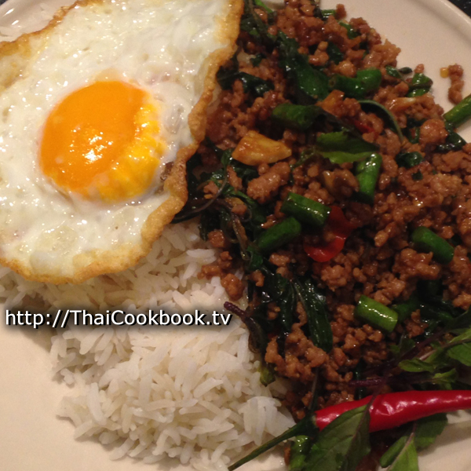

Basil Pork(Pad Kaprao)

Pad Kaprow (ผัดกะเพราหมู) is probably one of the most popular dishes in Thailand. It's a spicy stir fried dish made with chopped pork, basil, chilies, and garlic, and it's perfect for a one-dish meal over rice or as a side dish at a family style dinner. It's actually quite easy to make, and now you can try it at home with this restaurant perfected recipe from Worawut.
Ingredients
- Ground Pork Loin
- Holy Basil
- Yardlong Beans
- Thai Hot Chilies
- Garlic
- Oyster Sauce
- Light Soy Sauce
- Dark Sweet Soy Sauce
- Sugar
Steps
- Fry one egg and have it ready.
- Crush the garlic and chilies together, then fry them in oil for about 30 seconds.
- Add the ground pork and stir into the chili and garlic. Fry until well browned.
- Add the cut green beans, oyster sauce, sugar, and soy sauces. Fry until the pan starts to get dry, then add a small amount of water.
- Turn off the heat, then add fresh basil. Stir in well and serve immediately with steamed rice.